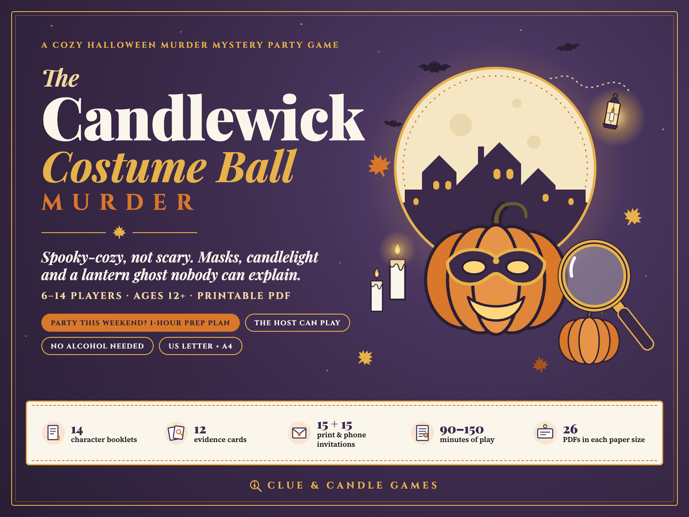
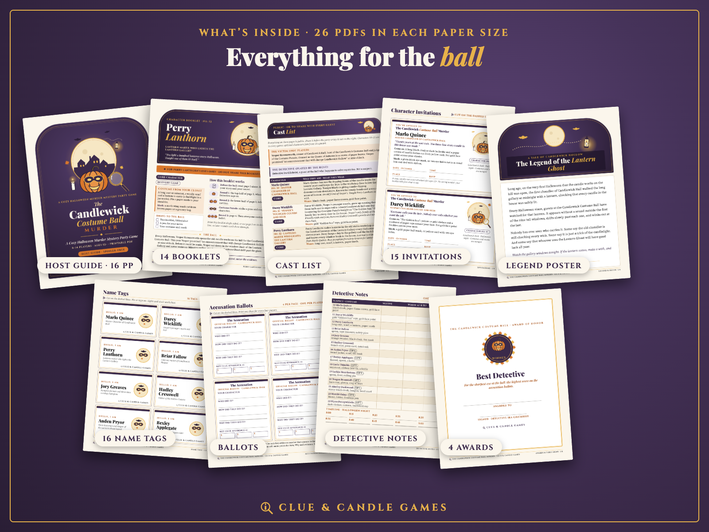
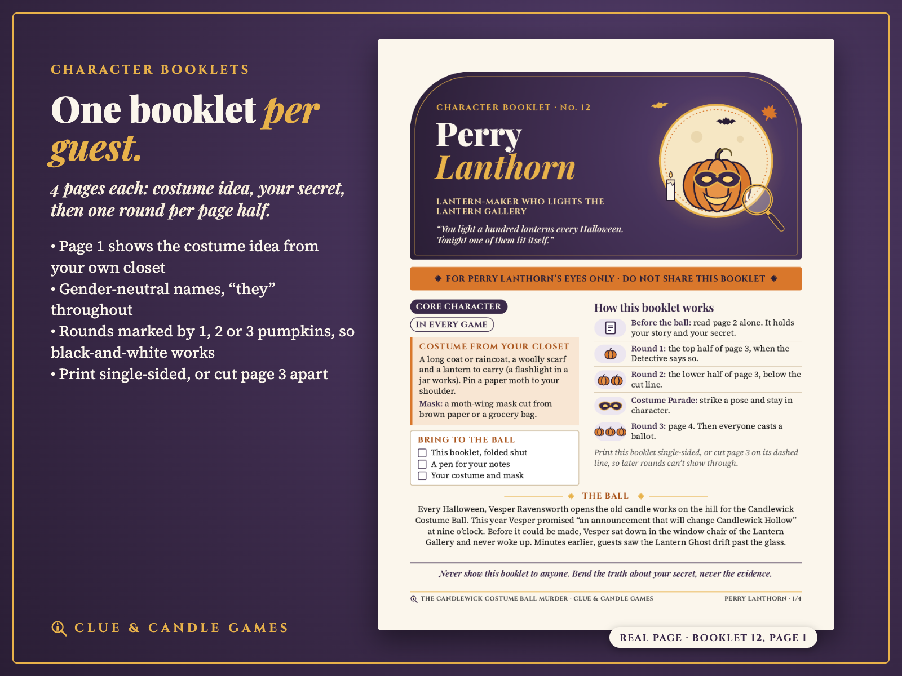
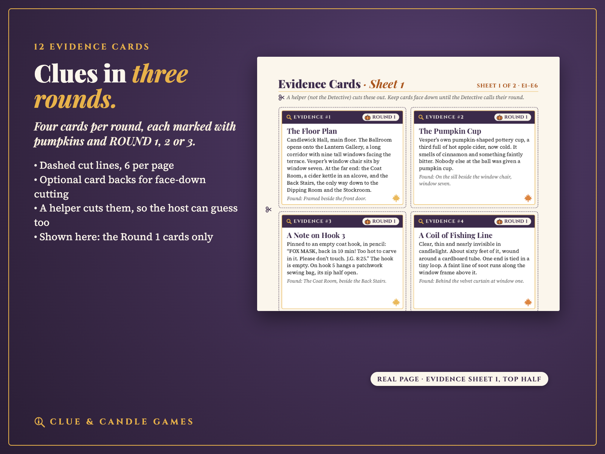
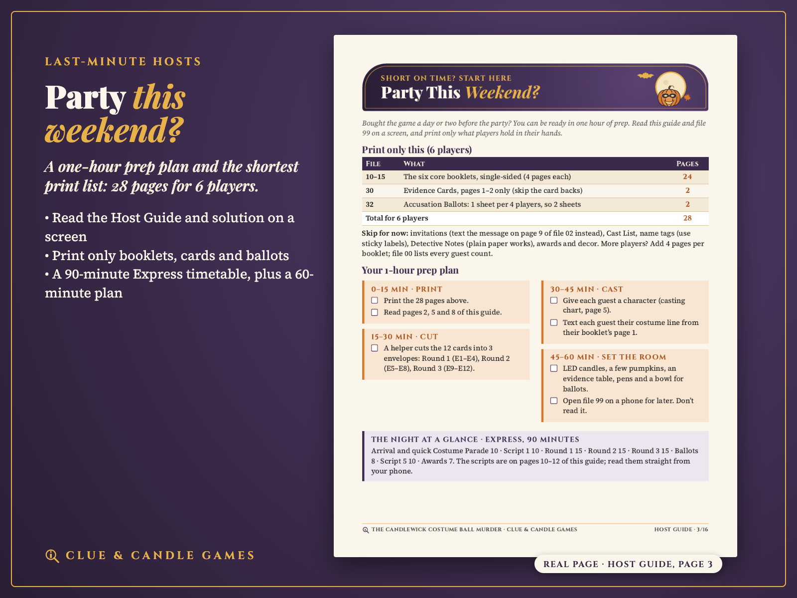
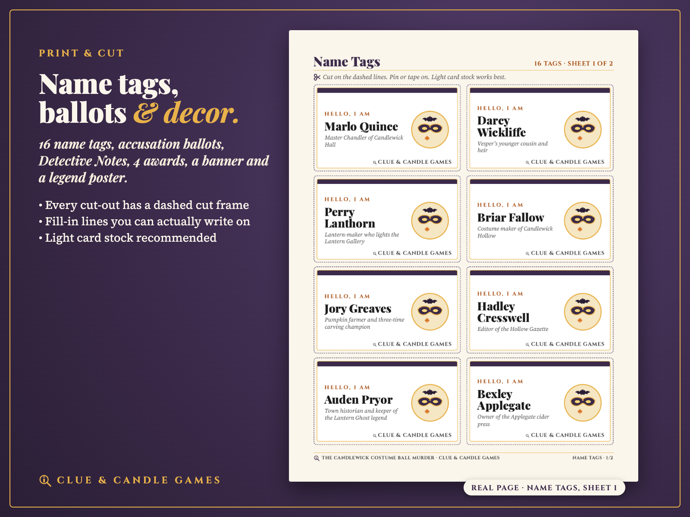

Spooky-cozy, not scary: masks, candlelight, pumpkins and a Lantern Ghost the evidence explains by the end. 6–14 Players · Ages 12+ · 90 minutes or 2.5 hours · printable PDF. US Letter and A4, from Clue & Candle Games, the party-games imprint of Hustle Studio.

$17.00 USD, one-time, for the whole party · 14-day refund
Buy now: $17🔒 Secure checkout by Waffo Pancake, our merchant of record · instant download right after payment · 14-day no-questions refund.
If the game doesn't make your party work, you get a full refund. Email our support inbox, chenphien@gmail.com, within 14 days of purchase with your order email. We refund the full $17 through Waffo to your original payment method. You don't need to give a reason, and you don't need to have played it (see Terms). We reply within 2 business days.
🔒 Secure checkout. Payment is handled by Waffo Pancake, our merchant of record. Waffo processes the payment, handles any sales tax or VAT that applies and emails you a receipt. We never see your card details.
📥 Instant download. Right after payment you land on your download page with the ZIP and every file on its own. Nothing is shipped, and there's no subscription.
Every picture below shows real pages from the PDFs: the full file set, page 1 of a character booklet (Perry Lanthorn), the Round 1 evidence cards, the Host Guide's "Party This Weekend?" page and a name-tag sheet. Nothing shown here gives away the answer or says who is innocent.





Every Halloween, Vesper Ravensworth opens the old candle works on the hill for the Candlewick Costume Ball. This year Vesper has promised "an announcement that will change Candlewick Hollow" at nine o'clock. Before it can be made, Vesper sits down in the window chair of the Lantern Gallery and never wakes up, minutes after guests see the legendary Lantern Ghost drift past the glass. Vesper is found dead, and the town doctor says it was no accident.
Your guests arrive in costume as the suspects: a master chandler, a reluctant heir, a lantern-maker, a costume maker, a pumpkin farmer, a newspaper editor and up to eight more. Every character has a secret, a reason to be suspected and a story that the evidence can check. Over three rounds, players share what their booklet tells them, ask two named suspects a question and try a small task, while twelve evidence cards appear on the table. Between Rounds 2 and 3, everyone struts in a Costume Parade. Then every guest fills in a ballot, a player opens the sealed solution and reads the reveal aloud, and you hand out the awards.
Costume ideas use things from your own closet (a bathrobe cloak, a paper crown, a cereal-box mask). It works for a Halloween party, an autumn birthday, a youth group, a book club or an office team, and for any costume party in any month.
Every booklet is exactly 4 pages, printed single-sided so later rounds can't show through: page 1 is the cover (role, a costume from your own closet, how the booklet works, the story so far); page 2 holds your story and your secret, read alone on arrival; page 3 holds Round 1 (top half) and Round 2 (below a cut line); page 4 holds Round 3, opened when the host calls it. Every round is marked by 1, 2 or 3 pumpkins plus the word ROUND, so black-and-white printing works. See the real page 1 of Perry Lanthorn's booklet above.
Yes. The answer follows from the 12 evidence cards and the six core booklets, and every optional character can be removed without breaking the clue chain. The 6-page sealed solution lays out a 6-step clue chain, explains the Lantern Ghost and says why each other suspect didn't do it. The story is original and was written with AI assistance, then edited by hand and checked clue by clue. If your group finds a hole in the logic, email us within 14 days: you get your refund, and we fix the file.
The same 26 PDFs in US Letter and in A4 (52 PDFs), 15 phone E-Invites (1080 × 1920 PNG), the offline Invitation Maker (HTML) and 1 ZIP that holds everything. After purchase every file can also be downloaded on its own from your download page. You only print what your party size needs; file 00 gives the print list for 6–14 players. File 24 is optional (the same 14 booklets in one file).
| # | File (in both US-Letter/ and A4/) | Pages |
|---|---|---|
| 00 | Start Here: file guide, print list for 6–14 players, FAQ | 4 |
| 01 | Host Guide: Party This Weekend? plan, prep checklist, casting chart 6–14 plus pairs for 15–20, cuttable characters, Evening Party (150 min) and Express (90 min) timetables, Scripts 1–4, legend poster tips, hosting tips, alcohol-free drinks and snacks, printing guide. No spoilers. | 16 |
| 02 | Invitations: 14 character invitations + 1 open invitation, 2 per page with cut lines, plus a copy-and-paste text version | 9 |
| 03 | Cast List: public bios and costumes | 3 |
| 10–15 | Booklets: Marlo Quince, Darcy Wickliffe, Perry Lanthorn, Briar Fallow, Jory Greaves, Hadley Cresswell (6 core characters) | 4 each |
| 16–23 | Booklets: Auden Pryor, Bexley Applegate, Corin Thimble, Larkin Hearthstone, Teagan Bramwell, Ainsley Duskwood, Merritt Oxley, Wynn Pennywhistle (8 optional characters) | 4 each |
| 24 | All Booklets Combined (the same 14 booklets in one file) | 56 |
| 30 | Evidence Cards: 12 cards plus optional card backs | 3 |
| 31 | Name Tags: 16 tags (14 characters, the Detective, 1 blank) | 2 |
| 32 | Accusation Ballots: 4 per page, with scoring | 1 |
| 33 | Detective Notes | 1 |
| 34 | Awards & Table Signs: 4 awards, 2 folding table signs | 6 |
| 35 | Legend & Decor: Lantern Ghost legend poster, pumpkin and bat cut-outs, 21-pennant banner, 4 photo props | 4 |
| 99 | Solution, Host Only (sealed): STOP page, answer, 6-step clue chain, Lantern Ghost explained, why not the others, Script 5, scoring | 6 |
Also included: E-Invites/ with 15 phone invitations (1 open + 14 characters, 1080 × 1920 PNG) and Invitation-Maker.html, an offline tool that writes and prints invitations.
ZIP structure
The-Candlewick-Costume-Ball-Murder_ClueAndCandleGames.zip ├── US-Letter/ (26 PDFs: 00–03, 10–24, 30–35, 99) ├── A4/ (the same 26 PDFs in A4 size) ├── E-Invites/ (15 PNGs, 1080 × 1920) └── Invitation-Maker.html
| Players | Booklets |
|---|---|
| 6 | 10–15 (the six core characters) |
| 7–14 | add 16, 17 … 23 in order |
| 15–20 | all 14, with pairs sharing optional characters |
The cast tops out at 14 characters. With 15–20 guests, a pair reads one booklet together and plays one character as a team: still 14 characters, not 20 separate roles. For 21–28 guests, the Host Guide shows how to run two parties side by side.
The Case of the Cold Cocoa is a free 10-page printable mini mystery for 4–6 players (about 45 minutes) from the same team: suspects, host scripts, evidence cards, ballots and a solution with its full clue chain. No email or signup needed. Play it to judge our writing and fairness before you spend anything.
Download the free mini mystery (PDF)What The Candlewick Costume Ball Murder adds over the free one:
How much is it?
$17 one-time for the whole party, no subscription. 14-day refund.
Can the host play?
Yes. The host plays Detective Ira Gilchrist and guesses along with everyone. A helper cuts the evidence cards without reading them, and a player reads the sealed solution after the vote.
Is it OK for teens and coworkers?
Yes, ages 12+. No gore, no adult jokes, no flirting and no drinking tasks.
Do we have to drink?
No. The cider in the story is alcohol-free and every drink idea is too.
Can I use it for a costume party that isn't Halloween?
Yes: a birthday, an autumn party or any masked costume party.
Will black-and-white printing work?
Yes. Text is near-black on light paper and rounds are marked with 1, 2 or 3 pumpkins plus the words ROUND 1, 2, 3.
How many players, really?
14 characters. With 15–20 guests, pairs share optional characters (still 14 characters, not 20 separate roles). For 21–28, the Host Guide shows how to run two parties side by side.
Are there reviews or party photos?
Not yet. Clue & Candle Games is a new brand, so there are no reviews or customer photos yet, and we won't invent any. That's why this page shows real interior pages, offers a free mini mystery to try first, and backs every purchase with a 14-day no-questions refund.
How do checkout and refunds work?
Checkout is run by Waffo Pancake, the merchant of record: it takes the payment, handles applicable sales tax/VAT and emails your receipt. For a refund, email our support inbox, chenphien@gmail.com, within 14 days with your order email; the refund goes back to your original payment method. We reply within 2 business days.
Licence?
Personal use: print as many copies as you need for your own parties. Please don't resell or share the files publicly. All names, places and events are fictional.
$17.00 USD, one-time · 14-day refund
Buy now: $17🔒 Secure checkout by Waffo Pancake (merchant of record). Instant download. 14-day no-questions refund: if the party doesn't work, you get your money back. Digital download only; nothing is shipped.
Hosting Friendsgiving next? The Gravy Boat Murder is our cozy potluck murder mystery.